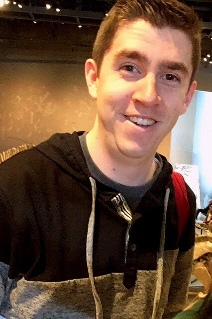

About Me
What’s up! My name is David Laws, and I am a seeker of truth, love, and every other good thing. Being the proud son of an Air Force veteran, I'm well-aquainted with travel. While it wasn't always the ideal lifestyle, it blessed me with an awareness of simple beauty. Whether you're in a big city, or a small town, there's always something beautiful to see.
My beliefs are simple; love Jesus, build unity, and wash your hands. Often. I am, always have been, and always will be a Mormon. I have so many reasons to believe there is a God, and if a God, an honored Son who really was able to atone for our sins. I resonate with being an ENFJ, and my enneagram falls somewhere between four and six.
Have a question? Send me a message!